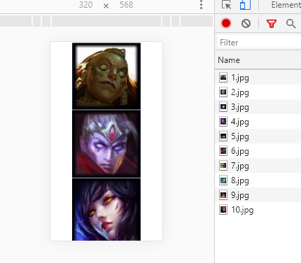
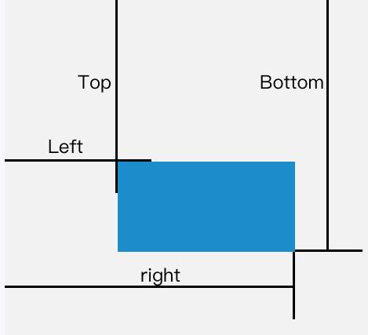
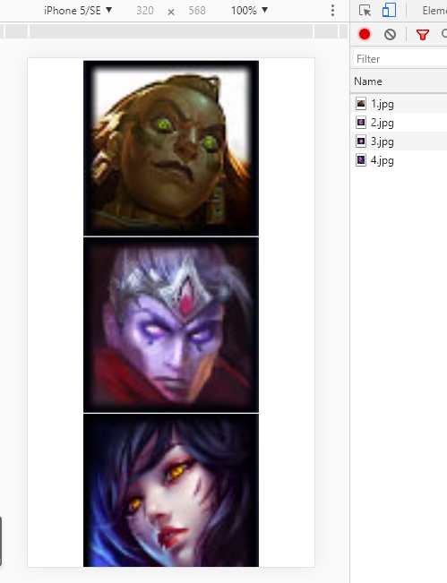
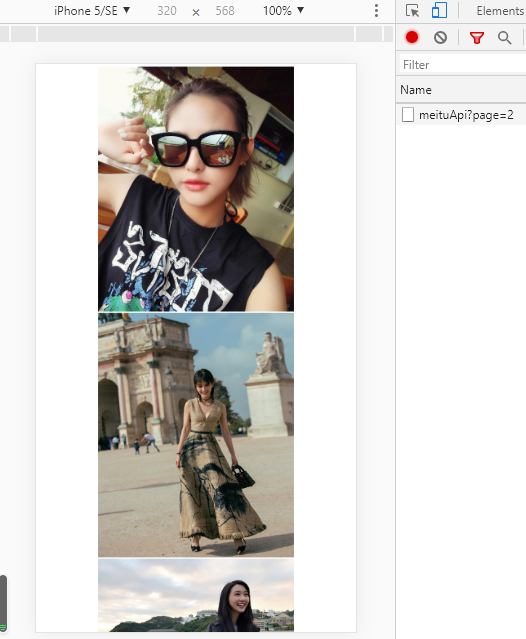
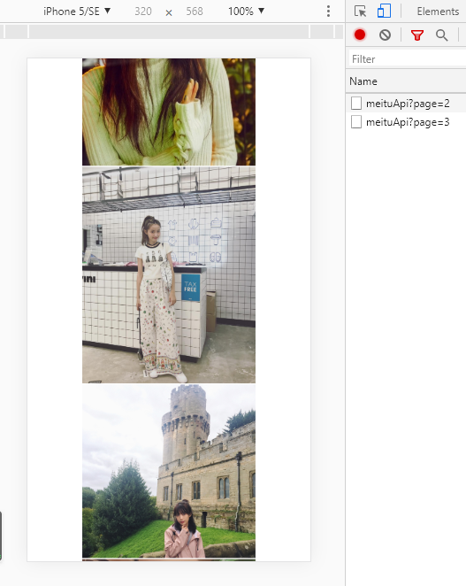

图片的懒加载就是在页面打开的时候，不要一次性全部显示页面所有的图片，而是只显示当前视口内的图片，一般在移动端使用（PC端主要是前端分页或者后端分页）。
对于一个页面加载速度影响最大的因素之一就是图片资源，如果一个页面图片太多（比如某宝，某东等），整个页面的图片大小可以到达几百兆，即使在百兆宽带，全部下载的话，也需要上十秒的时间，这对于用户耐心的考验是巨大的，更别说网络差的地方了。
因此，懒加载是必须要做的，对于页面未在可视区域内显示的图片先不做加载处理，只加载第一映入眼帘的图片，由于可视区域显示的图片少，加载速度就会大大提升，用户体验也会更好。
而且，用户可能只翻看一两页就退出了，剩下未查看的图片也就不需要加载了。这也相当于节省了带宽资源。
由于浏览器会自动对页面中的img标签的src属性发送请求并下载图片。因此，通过html5自定义属性data-xxx先暂存src的值，然后在需要显示的时候，再将data-xxx的值重新赋值到img的src属性即可。
这里模拟两种情况：
1、前端已经获取到所有的图片了，现在需要将这些图片以懒加载的形式展示。
例子如下：
<!DOCTYPE html>
<html lang="en">
<head>
<meta charset="UTF-8">
<title>懒加载Demo1</title>
<style>
.box {
width: 600px;
margin: 0 auto;
}
img {
width: 100%;
}
</style>
</head>
<body>
<div class="box">
<img src="./images/1.jpg" alt="">
<img src="./images/2.jpg" alt="">
<img src="./images/3.jpg" alt="">
<img src="./images/4.jpg" alt="">
<img src="./images/5.jpg" alt="">
<img src="./images/6.jpg" alt="">
<img src="./images/7.jpg" alt="">
<img src="./images/8.jpg" alt="">
<img src="./images/9.jpg" alt="">
<img src="./images/10.jpg" alt="">
</div>
</body>
</html>
可以看出，10张图片是一次性全部加载完的。
下面改造成懒加载：
首先将页面上的图片的 src 属性设为空字符串，而图片的真实路径则设置在data-src属性中。
当页面滚动的时候需要去监听scroll事件，在scroll事件的回调中，判断我们的懒加载的图片判断是否出现在视口内，如果出现在视口内，则将data-src赋值到src。
如何判断一个元素是否在视口内呢？
通过getBoundingClientRect()方法来获取元素的大小以及位置。这个方法返回一个名为ClientRect的DOMRect对象，包含了top、right、botton、left、width、height这些值。

随着滚动条的向下滚动，bound.top会越来越小，也就是图片到可视区域顶部的距离越来越小，当bound.top <= clientHeight时，图片的上沿应该是位于可视区域下沿的位置的临界点，再滚动一点点，图片就会进入可视区域。
function isInSight(el) {
const bound = el.getBoundingClientRect();
const clientHeight = window.innerHeight;
//如果只考虑向下滚动加载
//const clientWidth = window.innerWeight;
return bound.top <= clientHeight + 100; // 这里有个+100是为了提前加载。
}源代码
<!DOCTYPE html>
<html lang="en">
<head>
<meta charset="UTF-8">
<title>懒加载Demo1</title>
<style>
.box {
width: 600px;
margin: 0 auto;
}
img {
width: 100%;
height: 600px;
}
</style>
</head>
<body>
<div class="box">
<img src="" alt="" data-src="./images/1.jpg">
<img src="" alt="" data-src="./images/2.jpg">
<img src="" alt="" data-src="./images/3.jpg">
<img src="" alt="" data-src="./images/4.jpg">
<img src="" alt="" data-src="./images/5.jpg">
<img src="" alt="" data-src="./images/6.jpg">
<img src="" alt="" data-src="./images/7.jpg">
<img src="" alt="" data-src="./images/8.jpg">
<img src="" alt="" data-src="./images/9.jpg">
<img src="" alt="" data-src="./images/10.jpg">
</div>
</body>
<script src="https://code.jquery.com/jquery-1.11.3.min.js"></script>
<script>
$(function () {
// 第一次需要先加载一次
lazyLoad();
$(window).scroll(lazyLoad);
function isInSight(el) {
const bound = el.getBoundingClientRect();
const clientHeight = $(window).height(); // 可视区高度
return bound.top <= clientHeight + 100; // 这里有个+100是为了提前加载。
}
function lazyLoad() {
$.each($('.box img'), (index,item)=>{
if(isInSight(item)) {
$(item).attr('src', $(item).attr('data-src'));
}
});
}
});
</script>
</html>
当向下滑动的时候，从Network面板可以看到，剩下的图片是一个个加载的。
可能有人疑问为什么第一次加载了4张，而不是3张？
因为我在判断是否在可视区内加了100 ，return bound.top <= clientHeight + 100; 可以提前加载一张图片。
注意：一定要设置图片的高度。
提示：src的赋值在js原生和jq是不同的，混用的话不会生效。
用js原生方法：
document.getElementById("imageId").src = "xxxx.jpg";
用Jquery方法：$("#imageId").attr("src","xxxx.jpg");而下面的两种都不会生效：
$("#imageId").src = "xxxx.jpg";
document.getElementById("imageId").attr("src","xxxx.jpg");切记！
2、前端从后端获取图片进行展示，后端进行分页。
思路：当页面滚动的时候需要去监听scroll事件，在scroll事件的回调中，判断滚动条是否滚动到最底部，如果是，则将将图片的 src 属性设置为data-src的值。
判断是否滚动到最底部的方法：滚动条到顶部距离 + 可视页面高度 >= 当前页面高度
var seeHeight = document.documentElement.clientHeight; // 可视页面高度
var scrollTop = document.documentElement.scrollTop || document.body.scrollTop; // 滚动条到顶部距离
var bodyHeight = document.body.offsetHeight // 当前页面高度
然后判断： scrollTop + seeHeight >= bodyHeight 当滚动条到达底部的时候，获取后端分页的数据。
这里使用一个模拟接口来获取数据： https://www.apiopen.top/meituApi?page=1
page为页码数，一次返回20条数据。当page=0时，会随机返回一页数据，page>=1时会返回相应页码的数据。
源代码：
<!DOCTYPE html>
<html lang="en">
<head>
<meta charset="UTF-8">
<title>懒加载Demo1</title>
<style>
.box {
width: 600px;
margin: 0 auto;
}
img {
width: 100%;
height: 600px;
}
</style>
</head>
<body>
<div class="box"></div>
</body>
<script src="https://code.jquery.com/jquery-1.11.3.min.js"></script>
<script>
$(function () {
let pageNum = 2; // 因为第一页没有图片，我从第二页开始的
getImage(pageNum);
$(window).scroll(lazyLoad);
function getImage(pageNum) {
$.ajax({
url:'https://www.apiopen.top/meituApi?page='+pageNum,
type: 'GET',
success(res) {
// 遍历图片，将图片加入div中
if(res.code === 200 && res.data) {
res.data.forEach((item,index)=>{
$('.box').append(`<img src="${item.url}">`);
});
}
},
});
}
function lazyLoad() {
let seeHeight = document.documentElement.clientHeight;
let scrollTop = document.documentElement.scrollTop || document.body.scrollTop;
let bodyHeight = document.body.offsetHeight;
if((Math.ceil(seeHeight + scrollTop) >= bodyHeight)) { // 向上取整的原因是可能有小数
getImage(++pageNum);
}
}
});
</script>
</html>
当滚动到20张图的底部的时候，就会发出ajax请求，请求下一页数据。

至此本文完，有疑问可以在评论区随时交流哈。